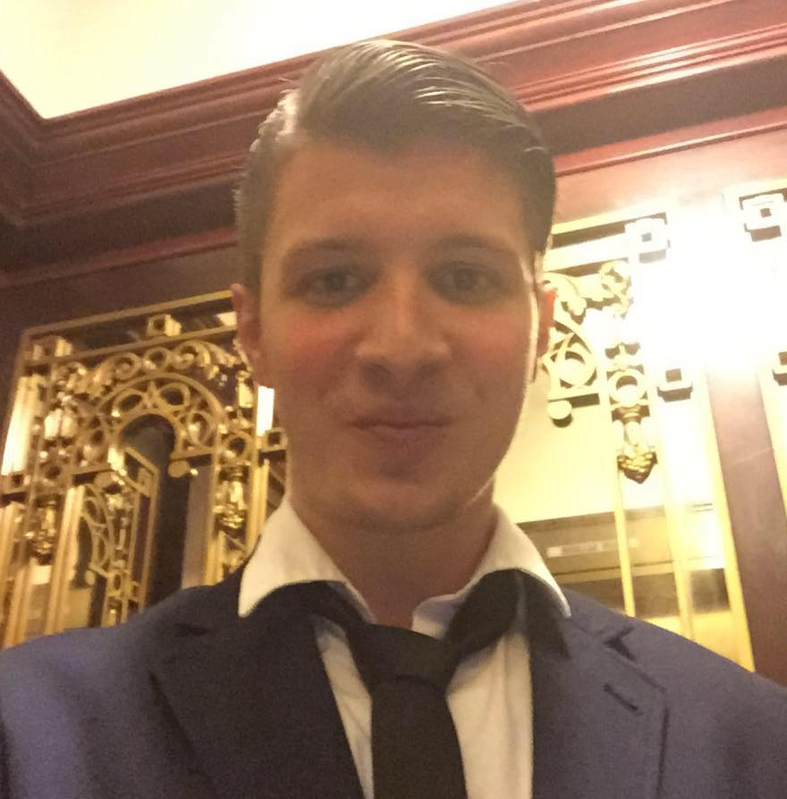

About Me

I was born on March 28th 1990, in New York. I graduated from Monroe Woodbury High School in June of 2008. I was a varsity lacrosse player all through-out high school. I did not attend college, I took a path that brought me on my own trials and tribulations. Much needed life lessons that I needed to learn, unfortunately, the hard way. None the less, I would not trade those experiences for anything. I have worked a ton of jobs before deciding to follow my passion for learning how to code.
I have been an Executive Assistant to presidents of media companies, which is actually where I truly fell in love with the tech world and code, to becoming and entrepeneaur and attempting to create my own real estate empire. Though I have made nice money in real estate, it is something I would prefer to have on the side. that is when I made the choice to invest my money into this program and add another skill set to my long list. In my spare time I enjoy playing soccer and lacrosse, eating pizza and I also enjoy gaming on my xbox. I play a ton of FIFA, NHL and PUBG.
My Resume